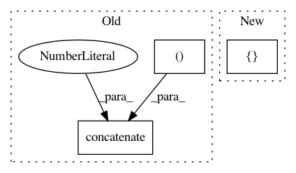

ddfa2edb2ca1fd28d23bee609565353d543ec722,niftynet/engine/windows_aggregator_resize.py,ResizeSamplesAggregator,decode_batch,#ResizeSamplesAggregator#Any#Any#Any#,60
Before Change
if "window" in w:
self.image_out[w] = window[w][batch_id, ...]
else:
window_loc = np.concatenate([window[w],
np.tile(location_init[
batch_id,...],
[window[w].shape[0],1])],1)
self.csv_out[w] = self._initialise_empty_csv(
n_channel=window[w][0].shape[-1] +
location_init[0, :].shape[
-1])
After Change
self.image_out[w] = window[w][batch_id, ...]
else:
if isinstance(window[w], (np.int, np.float32, np.bool)):
window_loc = np.reshape(window[w], [1, 1])
self.csv_out[w] = self._initialise_empty_csv(
n_channel=1)
else:
In pattern: SUPERPATTERN
Frequency: 3
Non-data size: 3
Instances
Project Name: NifTK/NiftyNet
Commit Name: ddfa2edb2ca1fd28d23bee609565353d543ec722
Time: 2019-06-04
Author: carole.sudre@kcl.ac.uk
File Name: niftynet/engine/windows_aggregator_resize.py
Class Name: ResizeSamplesAggregator
Method Name: decode_batch
Project Name: NifTK/NiftyNet
Commit Name: fa7ee697076d2061faeaf7ebf20cdcd5da352eae
Time: 2018-10-30
Author: elias.tappeiner@umit.at
File Name: tests/application_driver_test.py
Class Name: ApplicationDriverTest
Method Name: test_multi_device_multi_optimiser_gradients
Project Name: chainer/chainercv
Commit Name: 4e25beb116336c4c7c1462b752f38937cae1a2db
Time: 2017-05-13
Author: yuyuniitani@gmail.com
File Name: tests/links_tests/model_tests/faster_rcnn_tests/test_faster_rcnn.py
Class Name: DummyRegionProposalNetwork
Method Name: __call__